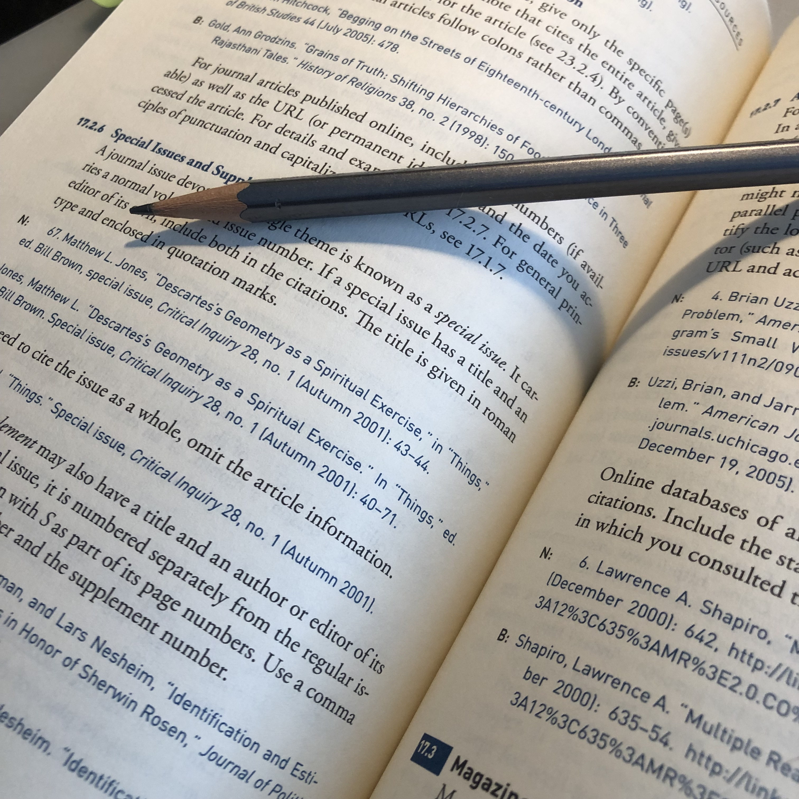

Características generales de los cinco reinos. (2021, 1 febrero). Portal Académico del CCH.
Eubacteria. Diccionario médico. Clínica Universidad de Navarra. (s. f.). Clínica Universidad de Navarra.


Unitips. (2021). Los 5 reinos de Margulis | Guía de examen UAM. blog.unitips.mx.
https://blog.unitips.mx/los-5-reinos-de-margulis-guia-de-examen-uam
Navarro, R. B. (2019, 11 enero). Las Arqueas: Un mundo microbiológico por descubrir. Blog sobre seguridad alimentaria.